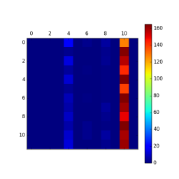
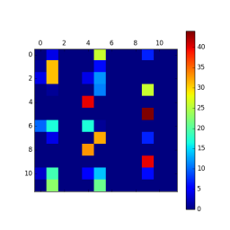
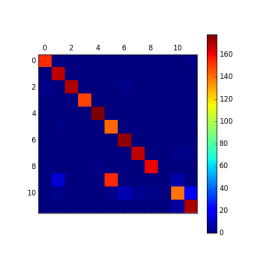
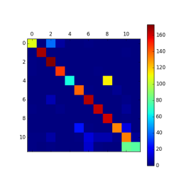
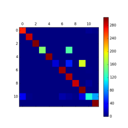
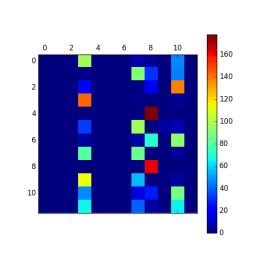
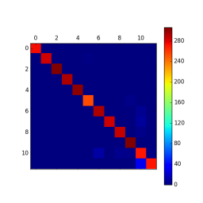

This paper talks about an experiment I did last year (2017) with neural networks and an idea I came up with to make it train better.
I was training a neural network to classify 12 different kinds of shapes, but it kept getting stuck on one or two shapes no matter how many times I started over again.
The idea I came up with was to bias the training data by giving it more examples of the shapes it was having trouble with, and less examples of the shapes it was getting correct.
I did this by calculating a “confusion matrix” at the end of each training epoch and used that matrix to bias my training set for the next epoch.
I couldn’t find where anyone else was doing this so I didn’t know what to call the technique. So I just named it “Confusion Matrix Driven Training”. If anyone knows what it is really called let me know.
I created a shape drawing program in C# to generate my training and testing data.
The shapes were “one hot” classified into 12 categories.
I broke my data into three, a training set, a validation set and a testing set.
The training set was used to train the neural network. The validation set was used to generate a confusion matrix at the end of each epoch, in order to evaluate how the training was going.
The test set was used to view the final results.
I created a basic convolutional neural network in Tensorflow with two pooling layers and three hidden layers.
I trained the network on 5,000 examples at a time, taken randomly from my training set. After doing this 50 times I ran a validation set confusion matrix to monitor the progress.
Again I trained the network on 5,000 samples at a time and after doing this 50 times I ran a validation set confusion matrix. Only this time I used the confusion matrix to bias the next 50 rounds towards shapes it was having trouble with.
So the number of shapes in each category that made up the training set would start out fairly even, something like this:
470, 515, 465, 400, 360, 450, 390, 330, 290, 490, 370, 470
But when it had trouble with a shape, for example class number 4 in the below example (zero indexed), the number of shapes in each category making up the training set looked like this:
100, 85, 120, 155, 3865, 80, 90, 110, 95,100,90,110
Here is what the validation set confusion matrix typically starts out like. The neural Network gives all the shapes the same classification.

Early in the training the neural network classifies a few shapes really well, most shapes not so well and a couple of shapes really poorly. The validation set confusion matrix starts looking something like this:

As training progresses, the neural network got better but starts having problems with specific shapes. These problems just get worse and worse as the training continues until no further progress is made.
Here is an example test set confusion matrix after training where the classifier is misclassifying Backward leaning ovals as Backward leaning rectangles.

Here is another example test set confusion matrix after training. This time the classifier is misclassifying Forward leaning rectangles as Forward leaning ovals.

The validation set confusion matrix starts out looking the same for both training techniques.
As training progresses the neural network starts classifying all the shapes more evenly, which is what I expected and what I hoped.
An unexpected result, however was that the neural network in both techniques ended up having problems with one or two shapes later in the training.
With one important difference. Instead of slowly improving, confusion matrix driven training seemed to “destabilise” the neural network and a sudden shift would occur where the classification became messed up.
Here is an example validation set confusion matrix sequence where the network is having trouble with two shapes

and the confusion matrix again after the network suddenly shifts. This shift occurs after training the network for a few epochs on mainly the one or two shapes it was having trouble with.

But it only takes a few more epochs of training before the confusion matrix returns to the desired pattern, only this time the problem it had with the shape is resolved and the technique successfully trains on all classifications. Here is a typical final test set confusion matrix. Success !

Neural networks start out with random weights. Depending on how training progresses, the neural network can “settle in” to an ineffective classification where the network has problems with one or two classes that seems to persist for the rest of the training.
Biasing the training set to have more examples of the classes it has trouble with early on in the training seems to “unsettle” the neural network progress.
It is as if the network suddenly has a paradigm shift. This shift results in a better overall classification.
I found this project took up a lot of my spare time and there were a lot of problems and difficulties along the way. But there is a lot of good training videos on youtube and you don’t have to be a math expert or programming expert to follow along.
Mostly I was copying and pasting examples without really understanding most of it. I also had to get a lot of help along the way.
I think anyone with an interest in machine learning can experiment with neural networks like I have and I think anyone can help to improve them. You don’t have to be an expert.
The disadvantage of not being an expert is that you might try things that an expert already knows doesn’t work.
The advantage of not being an expert is that you might try things that an expert already knows doesn’t work.
See, maybe not knowing what might and might not work is helpful in discovering new ways of doing stuff, with the added risk of just thinking you have discovered something new because you don’t know enough to know it’s been done before.